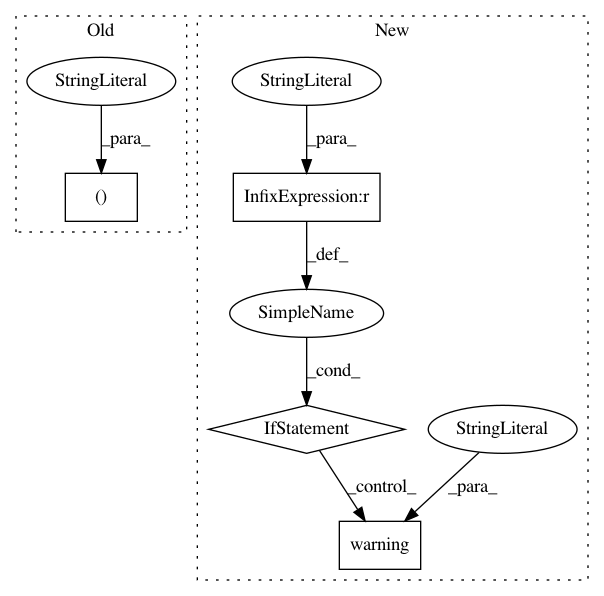

968f9795cb936b6a0c2b2c30b3591028cc1cf79c,lib/matplotlib/rcsetup.py,,validate_ps_distiller,#Any#,534
Before Change
s = s.lower()
if s in ("none", None):
return None
elif s in ("false", False):
return False
elif s in ("ghostscript", "xpdf"):
return s
After Change
_log.warning("Setting rcParams["ps.usedistiller"] requires "
"ghostscript.")
return None
if s == "xpdf":
try:
mpl._get_executable_info("pdftops")
except FileNotFoundError:
_log.warning("Setting rcParams["ps.usedistiller"] to "xpdf" "
"requires xpdf.")
return None
return s
else:
raise ValueError("matplotlibrc ps.usedistiller must either be none, "
"ghostscript or xpdf")
In pattern: SUPERPATTERN
Frequency: 3
Non-data size: 4
Instances
Project Name: matplotlib/matplotlib
Commit Name: 968f9795cb936b6a0c2b2c30b3591028cc1cf79c
Time: 2019-04-26
Author: anntzer.lee@gmail.com
File Name: lib/matplotlib/rcsetup.py
Class Name:
Method Name: validate_ps_distiller
Project Name: catalyst-team/catalyst
Commit Name: d53d6cf92b649fb18138c1ac6a4c6d803aa801c3
Time: 2020-02-10
Author: scitator@gmail.com
File Name: catalyst/contrib/__main__.py
Class Name:
Method Name: